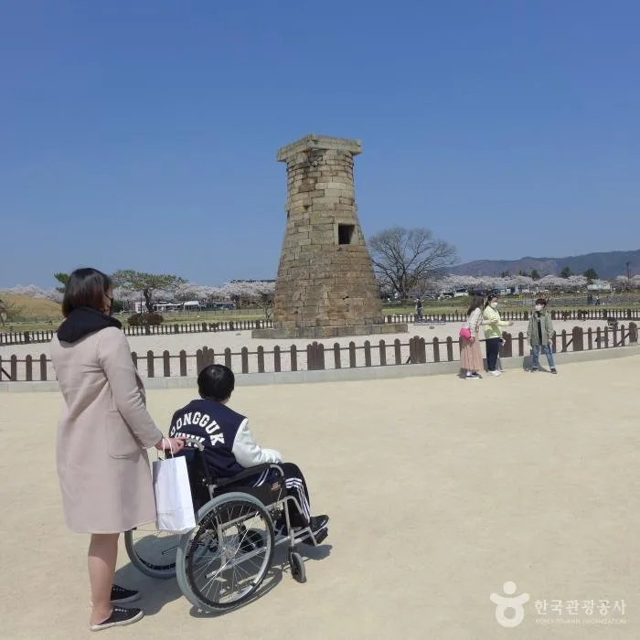
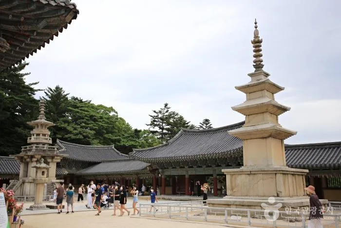
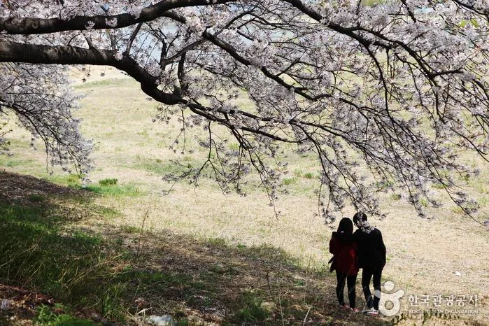
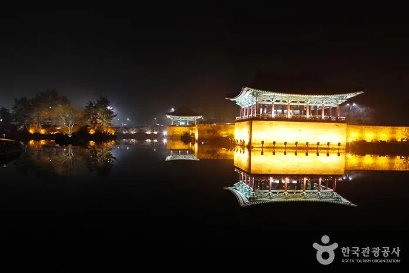
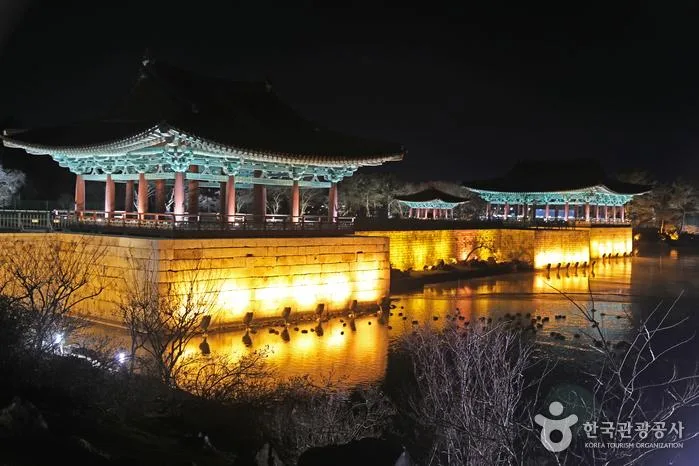
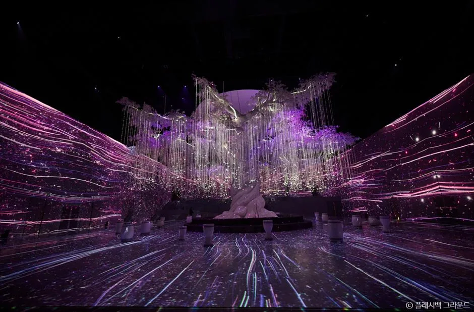

▲ 경주 황리단길 일대. 도보 상권으로 바뀌면서 차량 접근 난도가 올라갔다
경주는 박물관 도시가 아니라 도시 자체가 유적입니다. 이 말은 낭만적으로 들리지만, 운전자에게는 다른 뜻입니다. 볼 것이 한곳에 모여 있지 않다는 의미입니다.
세 권역이 각각 떨어져 있습니다. 첨성대와 대릉원이 있는 시내, 불국사와 석굴암이 있는 토함산 방면, 숙소가 밀집한 보문관광단지. 이 셋을 차 없이 잇기는 어렵고, 그렇다고 모든 곳에 차를 몰고 들어가면 주차에 시간을 씁니다.
1. 경주는 세 개의 도시다
시내 권역이 첫 번째입니다. 첨성대, 대릉원, 계림, 월성이 걸어서 이어지는 범위 안에 있습니다. 신라 왕릉급 무덤이 모인 대릉원이 시내 한복판에 있다는 점이 이 도시의 특징입니다.

▲ 첨성대. 신라의 천문 관측 시설로 국보로 지정돼 있다 ⓒ 대한민국 구석구석(한국관광공사)
두 번째는 토함산 방면입니다. 불국사와 석굴암은 시내에서 차로 이동해야 하는 거리이고, 석굴암은 불국사에서 다시 산길을 올라가야 합니다. 이 구간은 대중교통 배차가 촘촘하지 않아 차가 유리합니다.

▲ 불국사 경내. 시내에서 차로 이동해야 하는 별도 권역이다 ⓒ 대한민국 구석구석(한국관광공사)
세 번째가 보문관광단지입니다. 호텔부터 유스호스텔까지 숙소가 몰려 있고 보문호를 낀 산책로와 식당가가 붙어 있습니다. 관광지라기보다 베이스캠프에 가까운 성격입니다.
2. 황리단길은 차로 들어갈수록 손해다
황리단길은 황남동과 경리단길을 합친 이름입니다. 카페와 소품 가게, 식당이 밀집한 구역이고, 경주에서 가장 젊은 거리로 불립니다.
문제는 이 구역이 도보 상권이라는 점입니다. 원래 주거지였던 골목에 상권이 들어선 구조라 노상 주차 공간이 거의 없고, 있는 자리는 이미 차 있습니다. 차를 몰고 골목으로 들어가면 회차조차 어려운 구간이 나옵니다.

▲ 경주는 봄가을 성수기에 시내 주차 수요가 한 번에 몰린다 ⓒ 대한민국 구석구석(한국관광공사)
해법은 단순합니다. 시내 권역에 한 번 주차하고 대릉원~첨성대~황리단길을 걸어서 도는 것입니다. 세 곳은 도보로 이어지는 거리이고, 차를 옮기는 시간이 걷는 시간보다 오래 걸리는 경우가 많습니다.
3. 야간 관광이 주차를 어렵게 만든다
경주의 대표 이미지 상당수는 밤에 만들어집니다. 동궁과 월지의 반영, 월정교의 조명이 그렇습니다. 문제는 야간에는 주차 회전이 느려진다는 점입니다.

▲ 동궁과 월지 야경. 야간 관람객이 몰리는 대표 지점이다 ⓒ 대한민국 구석구석(한국관광공사)
낮에는 사람들이 30분~1시간 단위로 빠집니다. 밤에는 사진을 찍고 산책까지 하고 나가기 때문에 체류 시간이 길어지고, 그만큼 자리가 나지 않습니다. 해가 진 직후가 가장 붐빕니다.

▲ 월정교. 동궁과 월지와 함께 야간 동선이 겹치는 구간이다 ⓒ 대한민국 구석구석(한국관광공사)
야간 코스는 순서를 늦추는 편이 낫습니다. 해가 지자마자 가면 주차 경쟁이 가장 심하고, 한 시간쯤 뒤에는 오히려 자리가 납니다. 조명은 그대로 켜져 있습니다.

▲ 야간 콘텐츠가 늘면서 저녁 시간대 체류가 길어졌다 ⓒ 대한민국 구석구석(한국관광공사)
4. 보문단지를 거점으로 쓰는 이유
숙소를 보문에 잡는 것은 관성이 아니라 계산입니다. 보문관광단지는 조성 단계부터 관광 목적으로 설계돼 주차 여건이 시내보다 낫습니다. 저녁에 돌아와 차를 세우고, 단지 안에서는 걸어 다니는 구성이 가능합니다.
| 권역 | 차 사용 | 권장 방식 |
|---|---|---|
| 시내(대릉원·첨성대·황리단길) | 진입 최소화 | 한 번 주차 후 도보 |
| 토함산(불국사·석굴암) | 필수 | 각 시설 주차장 이용 |
| 보문관광단지 | 거점 | 숙박 + 단지 내 도보 |
| 야간(월지·월정교) | 조건부 | 해진 직후 1시간 뒤 진입 |
동선을 짜는 원칙은 하나입니다. 권역 사이는 차로 이동하고, 권역 안에서는 차를 세워두는 것입니다. 이 원칙을 지키면 하루에 세 권역을 다 볼 수 있고, 어기면 두 권역에서 하루가 끝납니다.
5. 성수기에는 계산이 달라진다
봄 벚꽃철과 가을 단풍철에는 시내 주차가 사실상 포화됩니다. 이 시기에는 시내 권역 진입 자체를 오전 이른 시간으로 당기거나, 보문에 차를 두고 시내버스나 택시로 접근하는 편이 빠릅니다.
숙박비도 이 시기에 오릅니다. 그럼에도 보문에 묵는 선택이 유효한 이유는, 주차 스트레스가 사라지면 하루에 소화하는 코스 수가 달라지기 때문입니다.
정리하면 이렇습니다. 경주에서 차는 권역을 잇는 수단이지 목적지까지 들어가는 수단이 아닙니다. 시내에서는 한 번 세우고 걷고, 토함산에서는 시설 주차장을 쓰고, 밤에는 한 시간 늦게 움직이십시오. 이 세 가지가 경주에서 시간을 가장 많이 아끼는 방법입니다.